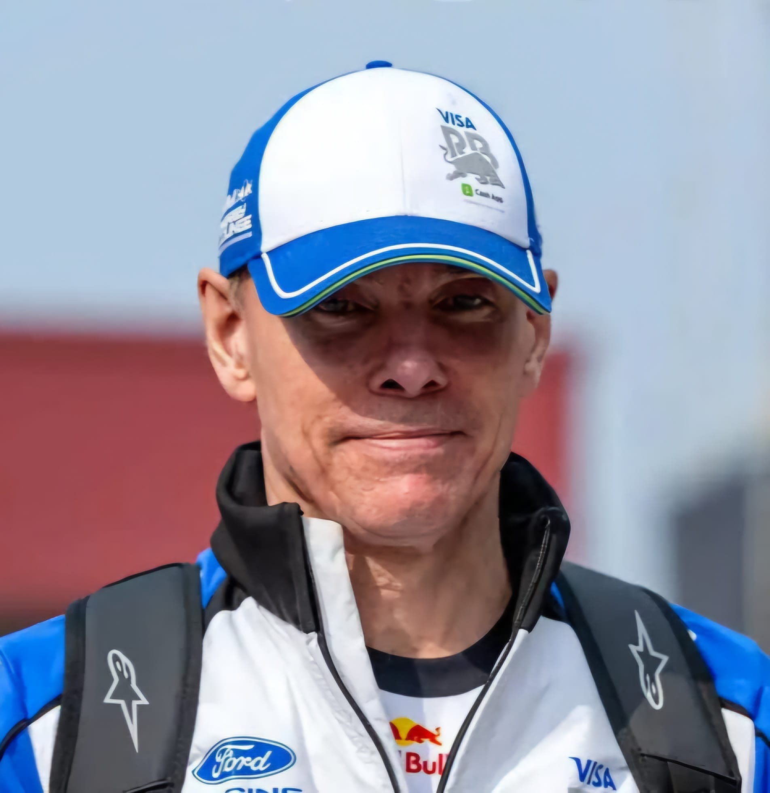

Alan Permane
Alan Permane
Team: Racing Bulls
Nationality: United Kingdom
Born: 1967
In charge since: 2024
History: engineer Alan Permane became Team Principal of Racing Bulls in 2025 after Laurent Mekies’ move to Red Bull. Having joined Benetton in 1989, Permane witnessed the team’s transitions through Renault, Lotus, and Alpine, serving as Race Engineer and later Sporting Director. His promotion came after decades of operational and technical leadership experience. Under his guidance, Racing Bulls continued their development as Red Bull's junior operation while achieving competitive mid-field results.
